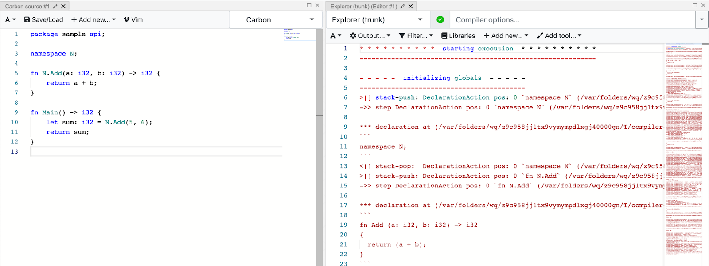

Note: This is the first of two guest blog posts from Carbon’s Google-Summer-of-Code contributors this year.
Carbon Explorer is a prototype interpreter for Carbon whose primary purpose is to act as a clear executable specification of the language. It can also be used as a platform for prototyping and validating changes to the language. Its intended audience is people working on the design of Carbon, and it is not intended for real-world Carbon programming on any scale.
Carbon Explorer’s trace output refers to a detailed record of program phases and their internal processes a program goes through when executed using the explorer.
If you want to read more about Carbon Explorer, you can follow this link: https://github.com/carbon-language/carbon-lang/blob/trunk/explorer/README.md
And if you want to try out the Carbon Explorer you can try it out at Compiler Explorer by following this link: https://carbon.godbolt.org/
Carbon Explorer’s trace output was very verbose and hard to use, so this project was focused on improving the user facing trace output by doing a range of improvements.
Improvements done to the trace output are classified in the following sections:
- Filtering
- A different way of tracing the state
- Adding the missing output
- Output format and design
- Testing the trace output
- Miscellaneous Changes
In this blog I will try to cover most of the improvements with respect to this piece of code written in Carbon Language.
package Something api;
namespace N;
fn N.Add(a: i32, b: i32) -> i32 {
return a + b;
}
fn Main() -> i32 {
let sum: auto = N.Add(1, 2);
return sum;
}
Trace output before this project was started (1396 lines): https://gist.github.com/prabhatexit0/e03c9ad426031813222b9faeb3216d0b
Trace output after the GSoC’23 period was over (226 lines, default options): https://gist.github.com/prabhatexit0/0ab3a7fec99e61eacccbcd4cf309b255
See it live in Compiler Explorer!
Filtering
As you can notice from the trace output example shared above, it was really verbose for a very simple program, this was majorly because it consisted of a lot of trace output that belonged to the prelude and it included all the program phases.
Note: Trace output wasn’t added for all the program phases before this project was started but we later added the missing trace output. That will be covered in the Adding the missing output section.
Now how did that happen?
So, there was no control mechanism for the trace output initially and everything was getting added to the trace that consisted of traces from all the program phases and both prelude and the user’s source code.
Hence, we implemented a filtering mechanism to let users select the program phases and file contexts for which they want to see the trace output.
And by default the trace was displayed only for the user’s source code and execution phase, which resulted in a less verbose default trace output.
Users can now select the program phases by passing the --trace_phase=... as a
compiler flag when running a program using Carbon Explorer with tracing enabled,
similarly the --trace_file_context=... flag can be used for selecting the file
contexts.
Some examples (taking the code example shared initially in the blog for these sample trace output):
$ bazel run //explorer -- <file path> --trace_file=<trace file path> --trace_file_context=main --trace_phase=name_resolution
* * * * * * * * * * resolving names * * * * * * * * * *
---------------------------------------------------------
==> declared `N` as `namespace N` in `package` (./testfile.carbon:3)
==> resolved `N` as `namespace N` in `package` (./testfile.carbon:5)
==> declared `Add` as `fn N.Add` in `namespace N` (./testfile.carbon:7)
==> declared `Main` as `fn Main` in `package` (./testfile.carbon:12)
->> resolving decl `namespace N` (./testfile.carbon:3)
==> marked `N` usable in `package`
<<- finished resolving decl `namespace N` (./testfile.carbon:3)
->> resolving decl `fn N.Add` (./testfile.carbon:7)
==> resolved `N` as `namespace N` in `package` (./testfile.carbon:5)
...
$ bazel run //explorer -- <file path> --trace_file=<trace file path> --trace_file_context=main --trace_phase=name_resolution,control_flow_resolution
* * * * * * * * * * resolving names * * * * * * * * * *
---------------------------------------------------------
==> declared `N` as `namespace N` in `package` (/app/example.carbon:3)
==> resolved `N` as `namespace N` in `package` (/app/example.carbon:5)
==> declared `Add` as `fn N.Add` in `namespace N` (/app/example.carbon:7)
==> declared `Main` as `fn Main` in `package` (/app/example.carbon:12)
...
* * * * * * * * * * resolving control flow * * * * * * * * * *
----------------------------------------------------------------
==> flow-resolved return statement `return (a + b);` in `fn N.Add` (./testfile.carbon:6)
==> flow-resolved return statement `return sum;` in `fn Main` (./testfile.carbon:11)
$ bazel run //explorer -- <file path> --trace_file=<trace file path> --trace_file_context=prelude --trace_phase=name_resolution
* * * * * * * * * * resolving names * * * * * * * * * *
---------------------------------------------------------
==> declared `As` as `interface As` in `package` (prelude.carbon:14)
==> declared `ImplicitAs` as `interface ImplicitAs` in `package` (prelude.carbon:19)
==> declared `__EqualConverter` as `interface __EqualConverter` in `package` (prelude.carbon:25)
==> declared `__EqualConvert` as `fn __EqualConvert` in `package` (prelude.carbon:28)
==> declared `EqWith` as `interface EqWith` in `package` (prelude.carbon:87)
==> declared `Eq` as `constraint Eq` in `package` (prelude.carbon:91)
==> declared `Ordering` as `choice Ordering` in `package` (prelude.carbon:146)
==> declared `CompareWith` as `interface CompareWith` in `package` (prelude.carbon:152)
==> declared `Ordered` as `constraint Ordered` in `package` (prelude.carbon:155)
...
You can read more about the usage here: https://github.com/carbon-language/carbon-lang/blob/trunk/explorer/README.md
Related pull requests:
- Improved trace output selection using program phase filtering #2851
- Implemented RAII Type to set current program phase #2886
- Add -trace_phase option that takes list of allowed phases #2962
- Comma separated selection of allowed phases for trace #2963
- Trace output filtering based on file context #2916
A Different Way of Tracing the State
Before this project was started, the state of a Carbon program during the execution with the Carbon Explorer was defined using the following:
{
stack: ... ,
memory: ...
}
Here the stack represented what is inside the action stack and memory represented the mapping of addresses to values. The memory is used to represent both heap-allocated objects and also mutable parts of the procedure call stack.
The stack is list of actions separated by double pound signs (##). Each action has the format:
syntax .position. [[ results ]] { scope }
And this was traced whenever all steps for an action were executed or when a recursive action was encountered.
Issue with this kind of approach was that it led to a lot of blank and repeated entries of the state in the trace output.
--- step decl namespace N .0. (./testfile.carbon:3) --->
{
stack:
memory: 0: Heap{}
}
{
stack:
memory: 0: Heap{}
}
--- step decl fn N.Add .0. (./testfile.carbon:7) --->
{
stack:
memory: 0: Heap{}
}
{
stack:
memory: 0: Heap{}
}
...
To get rid of this issue we decided to trace the state only when there is a change in stack or memory but after trying this out we noticed that there were many cases when there were changes in one and no changes in other and it was adding some verbosity to the output. So, we decided to trace the stack only when there is a change in the stack i.e. when an action is pushed or popped and trace the memory only when there is a change in memory or the memory is read i.e. allocation, deallocation, write, read.
For the action stack there were two operations that were pushing an action into the stack and popping an action from the stack.
- Push operation is printed as:
>[] stack-push: <action> (<source location>) - Pop operations is printed as:
<[] stack-pop: <action> (<source location>)
Here the first three characters try to resemble push/pop operation followed by the operation (stack-push/stack-pop), then the action is printed that is in the following format
ActionKind pos: <pos_count> `<syntax>` results: [<collected_results>] scope: [<scope>]
And for the memory,
- Allocation is printed as:
++# memory-alloc: #<allocation_index> `value` uninitialized? - Read from memory is printed as:
<-- memory-read: #<allocation_index> `value` - Deallocation is printed as:
--# memory-dealloc: #<allocation_index> `value` - Write to memory is printed as:
--> memory-write: #<allocation_index> `value`
You can read more about this format in the Carbon Explorer’s documentation at: https://github.com/carbon-language/carbon-lang/blob/trunk/explorer/README.md
So, this was the final result we got for the same:
>[] stack-push: DeclarationAction pos: 0 `namespace N` (./testfile.carbon:3)
->> step DeclarationAction pos: 0 `namespace N` (./testfile.carbon:3) --->
*** declaration at (./testfile.carbon:3)
```
namespace N;
```
<[] stack-pop: DeclarationAction pos: 0 `namespace N` (./testfile.carbon:3)
>[] stack-push: DeclarationAction pos: 0 `fn N.Add` (./testfile.carbon:7)
.
.
*** statement at (./testfile.carbon:6)
```
return (a + b);
```
--> memory-write: #1 `3`
<[] stack-pop: StatementAction pos: 1 `return (a + b);` results: [`3`] (./testfile.carbon:6)
.
.
*** statement at (./testfile.carbon:10)
```
var sum: auto = N.Add(1, 2);
```
<-- memory-read: #1 `3`
=== match pattern `Placeholder<sum>`
from initializing expression with value `3`
<[] stack-pop: StatementAction pos: 1 `var sum: auto = N.Add(1, 2);` results: [`3`] (./testfile.carbon:10)
Note: We will talk about the changes to the output outside of the state tracing later in the blog.
As you can clearly see, by doing this change we could embed more meaningful information by consuming less space. It also made the trace reading experience more intuitive, as you can see the trace for a step method for a particular action right after it is pushed into the stack and for the memory we know when it is read, allocated, deallocated or written.
Related pull requests:
- Trace stack and memory only when there is change in state #2982
- Explorer: add more information to stack trace #3040
Adding the missing output
Initially the name resolution, control flow resolution and unformed names resolution were not traced.
So, in this project we also added the trace for these phases.
Name Resolution
Several aspects are involved in the name resolution process within Carbon Explorer.
Firstly, all exposed names from declarations that possess a name to be exposed are added into the StaticScope (declared).
Subsequently, name resolution is performed for each declaration.
For more details regarding name resolution, you can look at this source file.
These are the details in the name resolution that we added into the trace output:
- Declaring a name into the static scope:
==> declared `name` as `name` in `scope` (source location) - Resolving a name from the static scope:
==> resolved `name` as `name` in `scope` (source location) - Start and finish for resolving statements and declarations:
->> resolving decl `decl syntax` (source location) <<- finished resolving decl/stmt `decl/statement syntax` (source location) - Marking names declared or usable:
==> marked `N` usable in `package` ==> marked `Add` declared but not usable in `namespace N` ==> marked `Add` usable in `namespace N`
You can view the name resolution trace by passing name_resolution in the
--trace_phase=-... flag.
Example: --trace_phase=name_resolution,...
Control Flow Resolution
In control flow resolution non-local control flow edges such as break and return are resolved that are there in the given AST.
For more details regarding control flow resolution, you can look at this source file.
For control flow resolution we add the details about following statements once their control flow is resolved:
- Return statements statements (ReturnVar and ReturnExpression)
==> flow-resolved return statement `statement syntax` in `function declaration syntax` (source location) - Break statements
==> flow-resolved break statement `statement syntax` for `loop syntax` (source location) - Continue statements
==> flow-resolved continue statement `statement syntax` for `loop syntax` (source location) - For loop statement
==> flow-resolved for statement `statement syntax` (source location) - While loop statement
==> flow-resolved while statement `statement syntax` (source location)
You can view the name resolution trace by passing name_resolution in the
--trace_phase=-... flag.
Example: --trace_phase=control_flow_resolution,...
Unformed Variables Resolution
Resolving unformed variables is a forward analysis that checks the may-be-formed states on local variables, for the same there is a class FlowFacts that maps the AST nodes to flow facts within a function.
Each AST node can be in either of the following form states:
- Must be formed
- May be formed
- Unformed
Following are the actions that can be performed on the flow facts mapping:
- Add initialized (adds a must-be-formed flow fact)
- Add uninitialized (adds an unformed flow fact)
- Form (Marks an unformed flow fact as may-be-formed)
- Check (Returns compilation error if the AST node is impossible to be formed)
- None (Used in traversing children nodes without an action to take)
For unformed variables resolution we added the following details into the trace output:
-
Action taken:
==> <action type> `name` (source location)Action type can be one of those defined above (AddInit, AddUninit, etc.)
-
When the explorer starts resolving unformed variables a statement
->> resolving-unformed in stmt `statement syntax` (source location) -
When the explorer starts resolving unformed variables a declaration
->> resolving-unformed in decl `declaration syntax` (source location)
Related pull requests:
- Add name resolution information to trace stream #2986
- Explorer: add trace for control flow resolution #3014
- Explorer: add trace for unformed variable resolution #3015
Misc Changes
There were a lot of minor changes we made to make the trace output more consistent and easy to read/understand for users.
Listing all the minor changes will get very long so for this blog; I’m writing just the major ones.
Enclosing the code with backticks
If you notice in the old trace output that I shared in this blog in the beginning, at some places it is getting a bit confusing to identify which part of the trace belongs to the code and which part doesn’t. To avoid this problem we enclosed all the code with backticks.
For single line code we used single backticks.
Example:
<[] stack-pop: DeclarationAction pos: 0 `fn N.Add` (./testfile.carbon:7)
And for multi-line code we used triple backticks along with newlines.
Example:
*** declaration at (./testfile.carbon:7)
```
fn Add (a: i32, b: i32) -> i32 { return (a + b); }
```
Adding source location to Type Checker’s trace
Type checker’s trace was very inconsistent format wise and lacked the source location at places where code was printed, so one of the additions while improving the type checker was to include source location at places where code is printed.
Before:
** declaring function Add
checking TuplePattern (a: i32, b: i32)
checking BindingPattern a: i32
checking ExpressionPattern i32
checking IntTypeLiteral i32
After:
->> declaring function `Add` (./testfile.carbon:7)
->> checking TuplePattern `(a: i32, b: i32)` (./testfile.carbon:5)
->> checking BindingPattern `a: i32` (./testfile.carbon:5)
->> checking ExpressionPattern `i32` (./testfile.carbon:5)
->> checking IntTypeLiteral `i32` (./testfile.carbon:5)
Shorten prelude’s path when printing source location
Prelude’s path that was printed on printing the source location was really long and it wasn’t important to fully specify it.
So, we shorten it down just to its filename.
Before:
--- step decl interface As .0. (/private/var/tmp/_bazel_prabhatsachdeva/20081091d895e017d1f90f5df34bb89f/execroot/carbon/bazel-out/darwin_arm64-fastbuild/bin/explorer/explorer.runfiles/carbon/explorer/data/prelude.carbon:14) --->
After:
->> step DeclarationAction pos: 0 `interface As` (prelude.carbon:14) --->
Related pull requests:
- Explorer: improve type checking trace output #3039
- Explorer: add trace for InstantiateType #3041
- Explorer: Reduce prelude path when printing source location #3080
Output format and design
Trace output lacked a format and was really inconsistent, so we created a convention to be followed in the trace and also created some helper methods to make it easier to manage.
Enhance Declaration and Statement Printing
Previously, the formatting of declarations and statements had inconsistencies, such as irregular newlines, missing whitespaces, excessive curly braces etc. and it also lacked indentation.
We manually fixed the inconsistencies by doing modifications in the Print
methods for Declaration and Statement.
There were three Print methods that existed for printing Declarations and
Statements i.e. Print, PrintDepth and PrintID.
The PrintDepth method had a parameter depth that signaled how many levels of
nesting to print. We initially tried to add the indentation logic in this method
but it was increasing the complexity and we later realized that there were no
active use cases for PrintDepth.
So, we renamed PrintDepth to PrintIndent, instead of the depth parameter
it has num_indent_spaces using which we can specify the required indentation
for the output and this method is called recursively for nested declarations or
statements.
Before:
namespace N;fn Add (a: i32, b: i32)-> i32 {
{
return (a + b);
}
}
fn Main ()-> i32 {
{
var sum: auto = N.Add(1, 2);
return sum;
}
}
After:
namespace N;
fn Add (a: i32, b: i32) -> i32
{
return (a + b);
}
fn Main () -> i32
{
var sum: auto = N.Add(1, 2);
return sum;
}
Line Prefixes
If you notice in trace output, you’ll see every line is prefixed with three symbols followed by a whitespace.
We created these line prefixes to improve readability and these prefixes also resemble the kind to which that particular line belongs to.
These are some of the methods that we created for adding line prefixes:
auto Indent() const -> llvm::raw_ostream& { return *this << " "; }
auto Start() const -> llvm::raw_ostream& { return *this << "->> "; }
auto Match() const -> llvm::raw_ostream& { return *this << "=== "; }
auto Result() const -> llvm::raw_ostream& { return *this << "==> "; }
auto Push() const -> llvm::raw_ostream& { return *this << ">[] "; }
auto Pop() const -> llvm::raw_ostream& { return *this << "<[] "; }
Examples:
In this example, declaring refers to some process that is starting for that we
created a prefix ->>
->> declaring function `Add` (./testfile.carbon:7)
->> checking TuplePattern `(a: i32, b: i32)` (./testfile.carbon:5)
In this example, the trace output is telling about some results so we prefixed
it with ==>
==> deduction succeeded with results: []
In this example, we prefixed the traced line for stack push with >[] and pop
with <[]
>[] stack-push: ExpressionAction pos: 0 `i32` (./testfile.carbon:9)
->> step ExpressionAction pos: 0 `i32` (./testfile.carbon:9) --->
<[] stack-pop: ExpressionAction pos: 0 `i32` (./testfile.carbon:9)
Heading and Subheadings
Previously, formatting style for headings and subheadings was in the following manner:
********** heading **********
********** subheading **********
To make it look better visually we changed it to this way:
* * * * * * * * * * Heading * * * * * * * * * *
-------------------------------------------------
- - - - - Subheading - - - - -
--------------------------------
And we also created following utility methods for the same:
void Heading(std::string_view heading) const {
add_blank_lines(2);
const std::string_view stars = "* * * * * * * * * *";
const std::string dashed_line(stars.size() * 2 + heading.size() + 4, '-');
*this << stars << " " << heading << " " << stars << "\n"
<< dashed_line << "\n";
}
void SubHeading(std::string_view sub_heading) const {
add_blank_lines(1);
const std::string_view dashes = "- - - - -";
const std::string dashed_line(dashes.size() * 2 + sub_heading.size() + 4, '-');
*this << dashes << " " << sub_heading << " " << dashes << "\n"
<< dashed_line << "\n";
}
These utility methods assist in generating the new style by adding the appropriate number of blank lines and constructing the required patterns of asterisks and dashes for both headings and subheadings. This results in a cleaner and more organized presentation of content, making it easier to visually distinguish between different sections.
Related pull requests:
- Explorer: Remove PrintDepth and implement PrintIndent. #3113
- Explorer: Add methods to trace for line prefixes #3076
- Explorer: Add heading and sub-heading methods to trace #3088
- Explorer: add blank lines between trace of different sections #3096
Testing the trace output
Before this project was started there existed only sanity checks for the trace output that were using LLVM FileCheck and LLVM LIT.
Initially for testing the trace output for the program phase filters that we added, we used LLVM LIT to create checks similar to how it was being done before, with a few changes to the configuration to support the compiler flags.
But the limitation with these checks was that they didn’t support autoupdate (for anything that changes the trace output we would have to change that part in the test manually as well) and they were prone to missing some significant changes in the explorer that might make changes in the trace output.
So, we created a test to completely check the trace output and that also supported autoupdate and that used a new testing infrastructure that was being built for the Carbon Language project to replace LLVM LIT and FileCheck.
Related pull requests:
- Improved trace output selection using program phase filtering #2851
- Trace output filtering based on file context #2916
- Check explorer’s full trace output #2934
Conclusion
As I look back on my journey during the Google Summer of Code 2023 with Carbon Language, I am proud of the progress we’ve made towards enhancing the user-facing trace output of the Carbon Explorer.
But there are still a lot of improvements that can be made to the trace output.
These are the possible tasks that we might accomplish in future.
Possible tasks for future
Source location based filtering to check trace for specific part of code
This will let users select trace output for select parts of the code.
Example usage:
1 | package Something api;
2 |
3 | namespace N;
4 |
5 | fn N.Add(a: i32, b: i32) -> i32 {
6 | return a + b;
7 | }
8 |
9 | fn Main() -> i32 {
10 | let sum: auto = N.Add(1, 2);
11 | return sum;
12 | }
Using the –trace_source_lines=5-7 flag like in the following command
$ bazel run //explorer <file path> --trace_file=... --trace_source_lines=5-7
Should print trace output that only belongs to the function N.Add
Customize highlighting in the godbolt output panel

Currently, the trace output in the Compiler Explorer’s output panel uses ASM syntax highlighting and that doesn’t look right and the ASM syntax isn’t compatible with the trace we are producing.
But we can have custom syntax highlighting for the trace output, Compiler Explorer uses monaco editor and for that we can create declarative syntax highlighting for trace using Monarch.
What we tried but didn’t work out
Indent the trace
There are many parts in the trace output which are nested and for that we planned on using indentation for them but it didn’t work out nicely as it made it consume a lot of horizontal space and that made readability hard.
Grouping messages and putting tab space between them for a column-like view
We created a log method in the TraceStream and tried to give more space between the arguments passed to it to give it a table like view similar to how assembly is formatted but for our case it didn’t work out and parts of trace can be really long.
Thank You!
At the end I would like to mention that contributing to Carbon Language as part of Google Summer of Code was a dream come true moment for me.
I’m really fortunate that I got this opportunity to connect with folks at Carbon Language and I will keep contributing to Carbon Language even after this GSoC period.
I’m extremely thankful to my mentor Richard Smith for guiding me through the project, all the reviews and all the weekly meetings!
Thank you for reading this blog! If you have any suggestions or doubts you can reach out to me on:
- Email: prabhatexit0@gmail.com
- Discord:
prabhatexit0